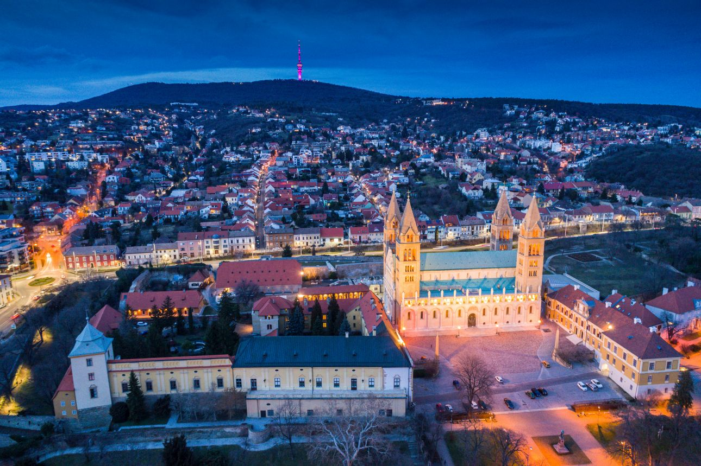

Pécs
(German: Fünfkirchen, Croatian: Pečuh, Serbian: Печуј/Pečuj, medieval Latin: Quinque Ecclesiae, ancient Latin: Sopianae)
is a county town in the southwestern part of Hungary, the country's fifth largest settlement after Budapest, Debrecen, Szeged and Miskolc.
(It is the largest settlement in Transdanubia. The seat of Baranya county and Pécs district, the center of Southern Transdanubia.)
At the beginning of the 2nd century, the Romans founded a city called Sopianae in the region inhabited by Celtic and Pannonian tribes. By the 4th century, the settlement had become a provincial seat and an important center of early Christianity. The early Christian cemetery complex from this period was added to the World Heritage List by the UNESCO World Heritage Committee in December 2000.
The bishopric was founded in 1009 by King Szent István, and the country's first university was founded in the city by King Lajos the Great in 1367. (Today, the largest university in the country still operates here, with nearly 34,000 students. Medieval Pécs was made one of the centers of the country's cultural and artistic life
by Bishop Janus Pannonius, the great poet of Hungarian humanism and the most prominent representative of Latin-language Hungarian poetry.